1人290円、はんだ付けなし
マイコンはブレッドボードに挿すだけです。用意するのはパソコンと USB ケーブル、タクトスイッチ1個くらいです。LED はボード上のもの（Pin-2）を使います。
UIAPduino で学ぶ マイコンC言語基礎講座 — 教材一式を公開しています
UIAPduino（CH32V003）は、USB でつなぐとキーボードやマウスとして動く小さなマイコンボードです。 この講座では、LED の点滅（Lチカ）から始めて、ブラウザ上の盤面でスネークを動かし、 BFS やボロノイで CPU と対戦するところまで進みます。 スライド・スケッチ・練習用 Web ページをすべて公開しているので、授業や部活動の教材としてそのまま使えます。
マイコンはブレッドボードに挿すだけです。用意するのはパソコンと USB ケーブル、タクトスイッチ1個くらいです。LED はボード上のもの（Pin-2）を使います。
WebHID を使うと、ブラウザとマイコンが双方向につながります。盤面・迷路・座標はブラウザが持つので、マイコン側は「考えて答えを返す」部分だけを書けば動きます。そのぶん C言語そのものに集中できます。
文法を先に並べることはしません。たとえば switch 文は、Keyboard Practice 1 で「ステップを変えるたびに書き込み直す」面倒を体験してから、その解決策として導入します。
bool 3枚 768B を uint8_t 1枚 256B に.h に押し込む」SnakeHID.h → SnakeVSHID.h前半は実機だけで進み、第3部からはブラウザ（WebHID Lab）と組み合わせます。 各部で使う Lab ページは、そのまま授業の実習として使えます。
マイコンとは何か、部材の紹介、Arduino IDE の使い方から始めます。スケッチ例の Blink でボード上の LED を点滅させ、書き込みの手順を覚えます。
学ぶC言語#definesetup()loop()pinModedigitalWritedelay
スケッチBlink
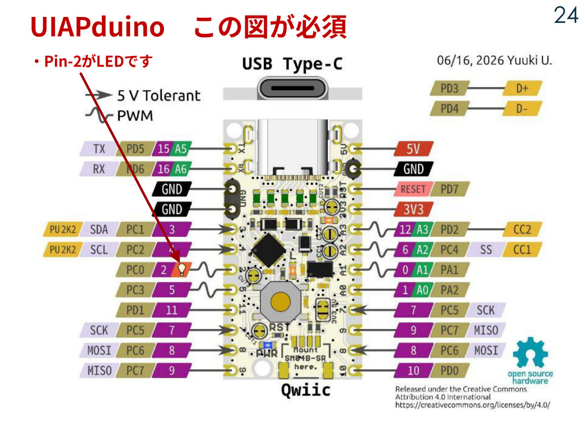
HID（Human Interface Device）の仕組みを知り、タクトスイッチを押すとパソコンに「a」が入力されるキーボードを作ります。
学ぶC言語#includeifdigitalReadINPUT_PULLUP
スケッチA_Key（講座中に手で打ち込む）
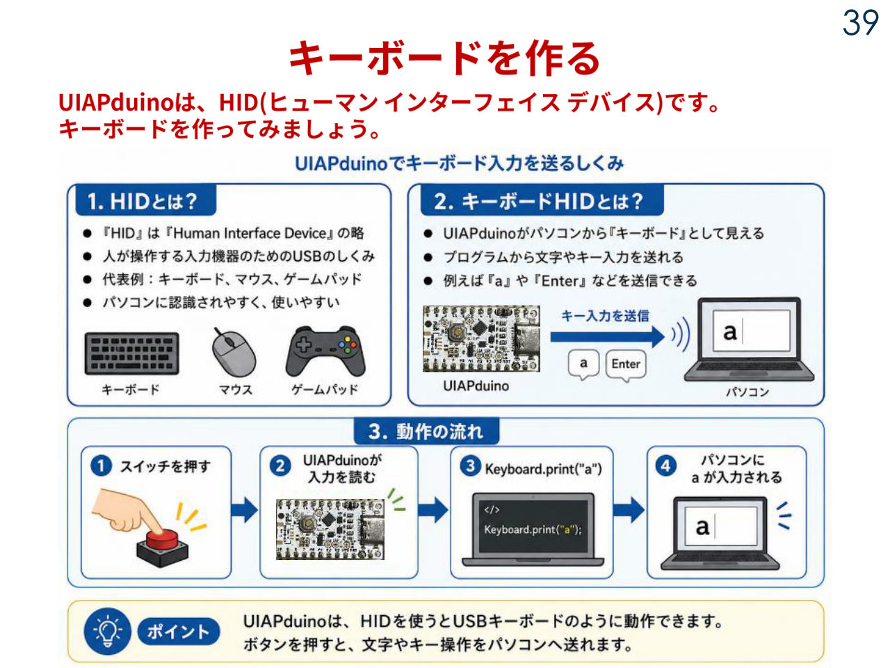
WebHID でブラウザとマイコンを双方向につなぎます。送ったものがそのまま返ってくる Echo Test で、通信の考え方をつかみます。
学ぶC言語uint8_t buf[16]WebHID.recv()WebHID.send()millis()
LabEcho Test
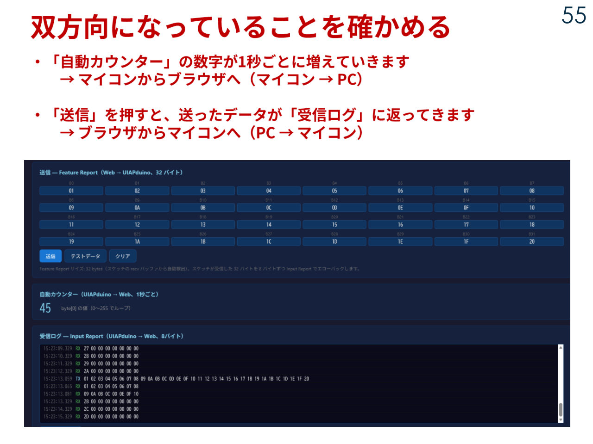
HID Console に hid.Println() で値を出して、マイコンの中で何が起きているかを見えるようにします。そのうえで変数・型・配列を学び、スケッチを .ino／.h／.cpp の3つに分ける理由を説明します。
学ぶC言語変数と型演算for配列classpublic / private#ifndefextern
LabHID Console
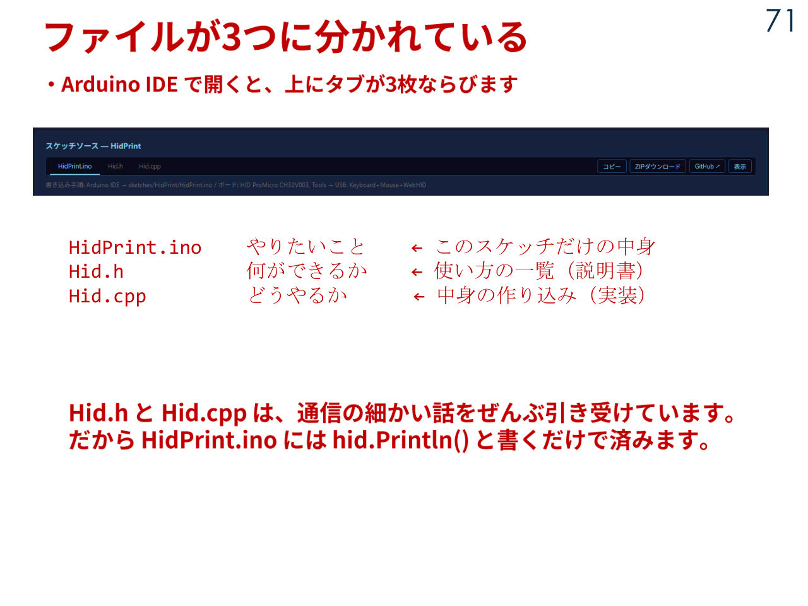
文字入力・カーソル移動・Backspace・Enter・Home の5ステップを練習します。1回目はコメントで切り替えて書き込み直し、2回目は switch 文に書き直して、ブラウザからステップを選べるようにします。わざと設定を間違えて、エラーメッセージの読み方も体験します。
学ぶC言語///* */switchcasebreakエラーの読み方
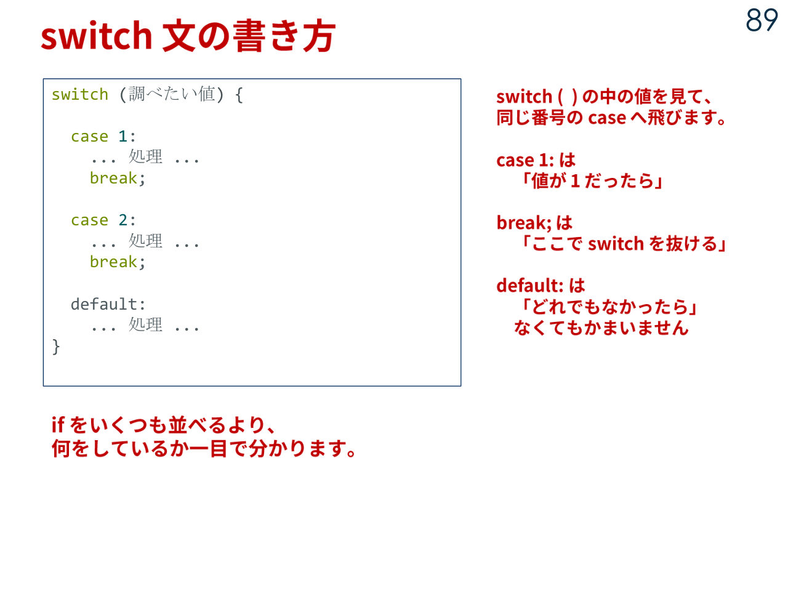
16×16 の盤面で岩を避けながら伸び続けるスネークを、マイコン側のプログラムで動かします。「ぶつからない方向」だけではすぐ詰まることを体験してから、「進んだ先が広いほう」を選ぶ BFS（幅優先探索）に進みます。
学ぶC言語二次元配列関数参照渡し &continueBFS
LabSnake Solver
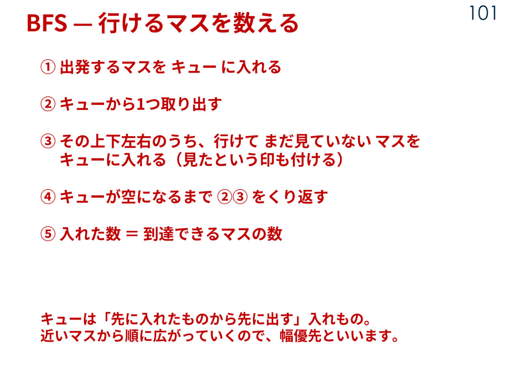
2匹のスネークが陣地を取り合う対戦です。盤面を1マス1バイトにまとめて RAM を節約し、正面衝突の判定を学びます。配布スケッチは CPU Lv3 と互角で、Lv4 のボロノイ（自分の陣地 − 相手の陣地）が壁になります。
学ぶC言語RAM の節約constボロノイミニマックスの考え方
LabSnake VS
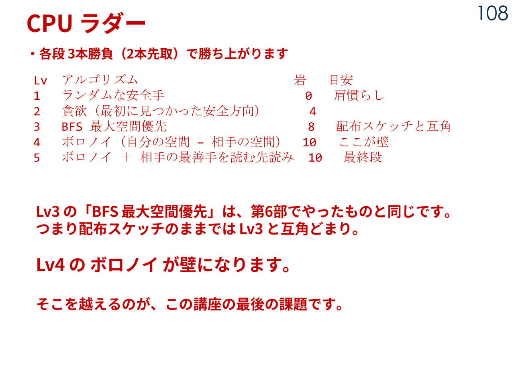
講座の後半は、練習用の Web サイト UIAPduino WebHID Lab と組み合わせて進みます。 Chrome か Edge でページを開いて「デバイスを選択して接続」を押すだけで、UIAPduino とつながります。インストールは要りません。
各ページには、接続ボタン・ワークエリア・通信ログ・スケッチのソースと ZIP ダウンロード・段階的なヒントがそろっています。授業の実習ページとしても、生徒が家で続きをやるページとしても使えます。
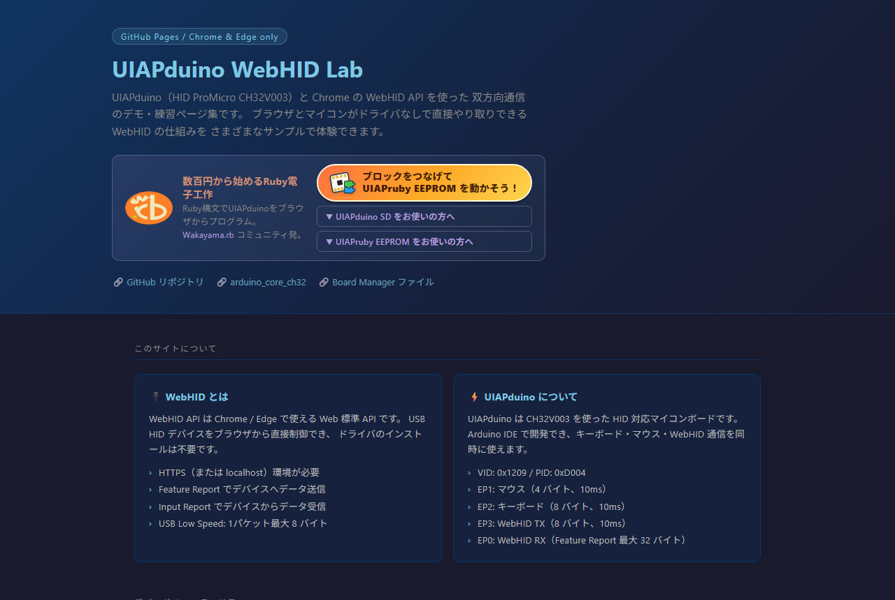
16 バイトを送ると、そのまま返ってくるだけのページです。ブラウザ → マイコン、マイコン → ブラウザの両方向と、1秒ごとのカウンターを確かめます。
hid.Print() / hid.Println() の出力をブラウザに表示します。画面のないマイコンでも、変数の値やどこまで実行されたかが見えるようになります。
UIAPduino をキーボードとして使い、文字入力・カーソル移動・Backspace・Enter・Home を5ステップで練習します。ステップはコメントで切り替えます。
同じ5ステップを switch 文で書き直します。1回書き込めば、ブラウザからステップを自由に切り替えて何度でも実行できます。
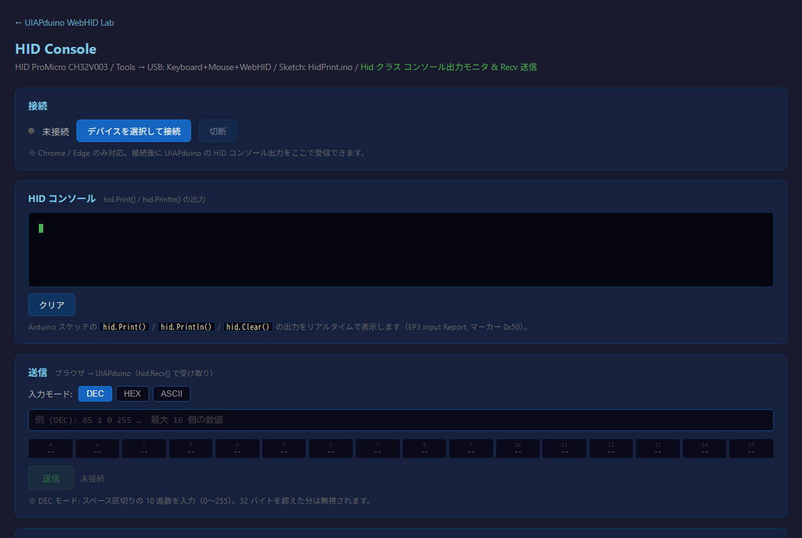
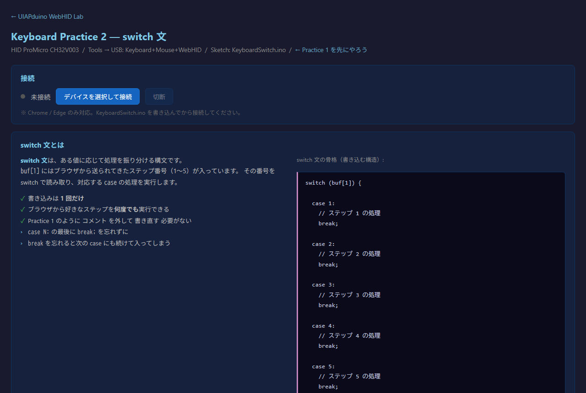
盤面や迷路はブラウザが管理し、UIAPduino は「次にどちらへ進むか」だけを返します。書くのはアルゴリズムの部分だけです。
16×16 の盤面で、岩を避けながら決められた歩数だけ伸び続けます。レベルが上がるたびに岩が3個増えます。二次元配列で盤面を覚え、BFS で「行ける広さ」を数えて進む方向を決めます。
自分のアルゴリズムが CPU と陣地を取り合う対戦スネークです。CPU 5段ラダーを3本勝負で勝ち上がります。2台の UIAPduino を直接戦わせる 2P 対戦とランキングもあります。
落ちてくる岩をよけながら得点アイテムを拾います。安全な場所にいるだけではノルマに届きません。危険を承知でどこまで稼ぎに出るか、その判断をプログラムに書きます。
ブラウザが出す 15×15 の迷路を、UIAPduino が自分で解きます。solveMaze() に右手法 → DFS → BFS と実装を上げていきます。ゴールすると次の迷路へ進みます。
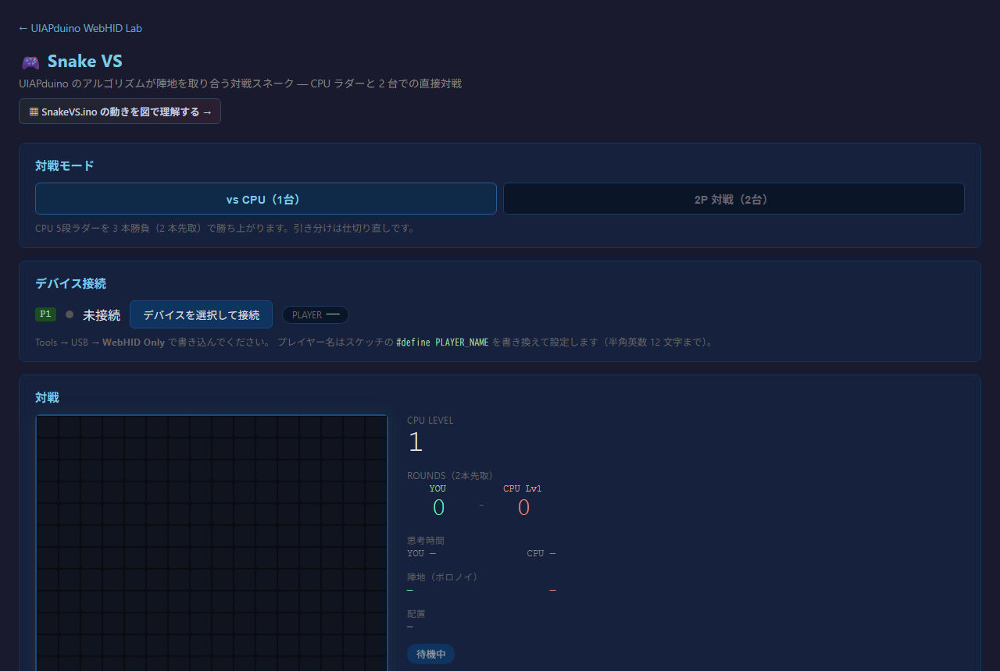
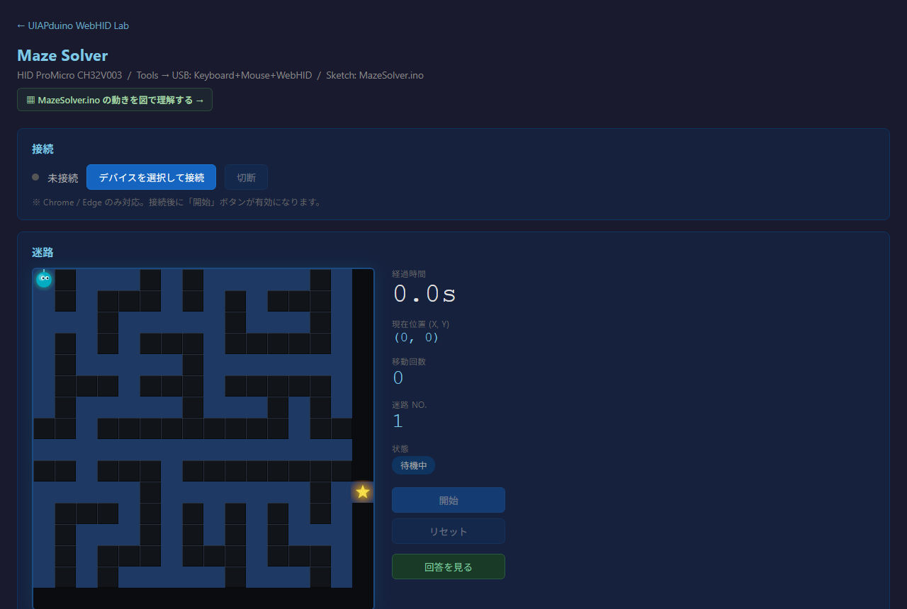
4つのゲームには、それぞれ図解ガイドがあります。16×16 の盤面の図の上で、配列の中身や BFS の広がり方を1段階ずつ追えます。
「図でつかんでから、コードに戻る」ための教材です。Snake Solver・Snake VS・Rock Dodge のガイドの最後には、.ino 全体を一行ずつ説明した解説も付いています。
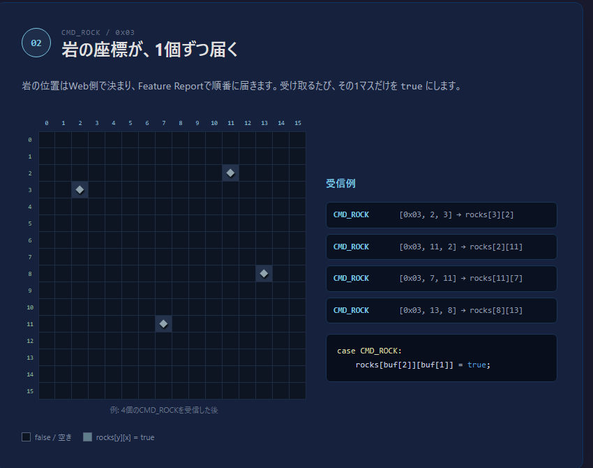
スネークの「記憶」を盤面で見てみよう
2枚の bool 配列で盤面を覚える、X と Y の向き、岩の受信、countReachable() で4方向を比べるところまで。
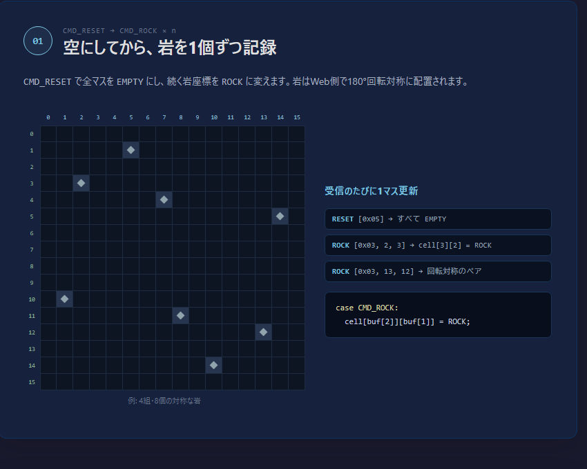
2匹ぶんの「記憶」と1手の決め方を見てみよう
1マスを1バイトで表す、取り合いになるマス、BFS で生き残れる広さを数える。配布スケッチを超えて勝つためのヒントもあります。
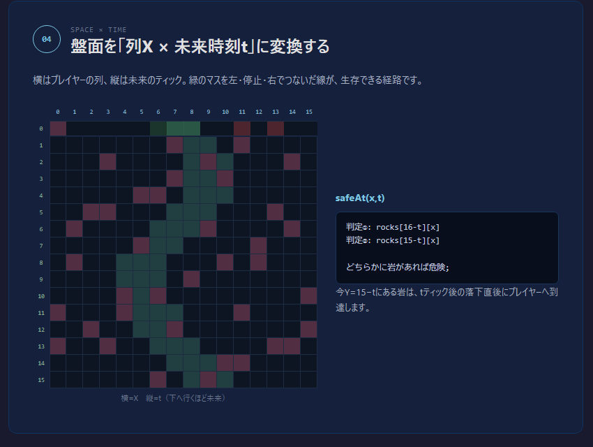
落ちてくる未来を時間方向に読む
盤面を「列 X × 未来の時刻 t」に置き換え、safeAt(x, t) で生き残れる経路を探します。空間の探索を時間の探索に読み替える考え方です。
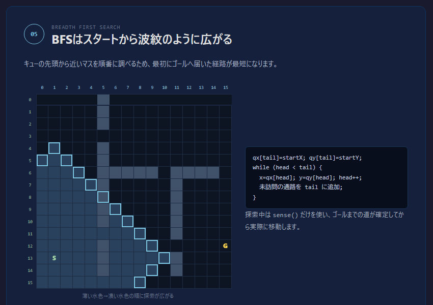
見えない迷路を調べながら進む
「見るだけ」と「実際に進む」の使い分け、DFS とバックトラック、BFS が波紋のように広がって最短経路を見つける様子を比べます。
講座では使っていませんが、同じ流れで取り組める練習ページです。
講座の残り時間や、持ち帰ってからの課題です。どのページもヒントが段階的に出るようになっていて、最後の段のコードだけは伏せてあります。 Snake VS と Rock Dodge にはランキング（そのパソコンのブラウザに保存）があるので、クラスの中で競い合うこともできます。
| 課題 | 目標 |
|---|---|
| Snake VS | 配布スケッチは CPU Lv3 と互角で、Lv4（ボロノイ）で止まります。ボロノイを実装して Lv4 を倒します。 |
| Snake VS 2P | 2台の UIAPduino を直接対戦させます。ランキングは連勝記録です。 |
| Rock Dodge | 安全な場所に乗っているだけではノルマに届きません。どこまで稼ぎに出るか、採算の判断が勝負です。 |
| Maze Solver | solveMaze() に右手法 → DFS → BFS と実装を上げていきます。 |
Snake VS と Rock Dodge では、スケッチの #define PLAYER_NAME に自分の名前（半角英数12文字まで）を書いて使います。2台で対戦するときは、必ずお互い違う名前にしてください。
| 品目 | 型番・備考 | 入手先 |
|---|---|---|
| マイコン | UIAPduino（HID ProMicro CH32V003）290円 | スイッチサイエンス |
| ブレッドボード | EIC-801 | 秋月電子通商 |
| ピンヘッダ | マイコン基板用。必要な分を折って使う | 秋月電子通商 |
| ジャンパーワイヤ | コネクター付ケーブル（オス-オス）。1本ずつ切り離して使う | 秋月電子通商 |
| USB ケーブル | Type-A → Type-C | 秋月電子通商 |
| タクトスイッチ | 押すとオンになるもの | 秋月電子通商 |
UIAPduino は、足を上にそろえてまっすぐ縦にブレッドボードへ挿します。タクトスイッチは GND と Pin-3 につなぎます（押すと Pin-3 が LOW になります）。
C:\Users\student）学校が管理しているパソコンを使う場合は、アプリのインストールと USB 機器の利用が制限されていないかを先に確認してください。
https://raw.githubusercontent.com/tarosay/board_manager_files/main/package_uiap_hid_index.jsonボードパッケージとライブラリの詳細は arduino_core_ch32 を参照してください。手順は画面つきで「事前準備など」の PDF にまとめています。
講座のスライド全129枚。7部構成で、Lチカから Snake VS のボロノイまで。
約 8 MB PDF必要な PC 環境、半角英数字名のローカルユーザーの作り方、Arduino IDE の導入とボードの追加、テストビルド、予習用の解説（HID・ブレッドボード・スイッチ・ピン）。全39枚。
約 2 MBZIP には sketch.yaml が入っているので、展開して開けばボード設定が自動で入ります。Tools → USB の設定がスケッチによって違うので注意してください。
| スケッチ | Tools → USB | Lab ページ |
|---|---|---|
| Blink | Keyboard+Mouse | —（Lチカ） |
| A_Key | Keyboard+Mouse | —（キーボードを作る） |
| WebHIDTest | Keyboard+Mouse+WebHID | Echo Test |
| HidPrint | Keyboard+Mouse+WebHID | HID Console |
| KeyboardPractice | Keyboard+Mouse+WebHID | Keyboard Practice |
| KeyboardSwitch | Keyboard+Mouse+WebHID | Keyboard Practice 2 |
| SnakeSolver | WebHID Only | Snake Solver |
| SnakeVS | WebHID Only | Snake VS |
| RockDodge | WebHID Only | Rock Dodge |
| MazeSolver | Keyboard+Mouse+WebHID | Maze Solver |
スケッチの原本は uiap-hid-web にあり、各 Lab ページの「ZIP ダウンロード」からも入手できます。Blink・WebHIDTest・KeyboardPractice・KeyboardSwitch は Arduino IDE のスケッチ例にも入っています。
いちばん詰まりやすいところです。Snake 系（SnakeSolver / SnakeVS / RockDodge）だけが WebHID Only で、MazeSolver に移るときは Keyboard+Mouse+WebHID に戻します。WebHID を使うスケッチを WebHID なしの設定でビルドすると、次のエラーで止まるので、設定の間違いはここで気づけます。
#error "WebHID ライブラリを使うには: Tools > USB > WebHID Only
または Keyboard+Mouse+WebHID を選択してください"講座では、このエラーをわざと出して「エラーは読めば答えが書いてある」ことを体験する回（第5部）を設けています。
UIAPduino のボタンを押しながら USB を挿し、挿したらすぐ離す → Arduino IDE の書き込みボタン、の順です。Lチカ・キーボード・WebHID のどのスケッチでも同じ手順です。
ユーザーフォルダー名に日本語が含まれている場合は、半角英数字名のローカルユーザーを作ってから Arduino IDE をインストールします（管理者権限が必要です）。学校のパソコンでは、インストールや USB の制限も事前に確認してください。
WebHID は Chrome と Edge だけで動きます。ページを開いたら「デバイスを選択して接続」を押し、一覧から UIAPduino を選びます。つながるのは、人が選んだ機器だけです。